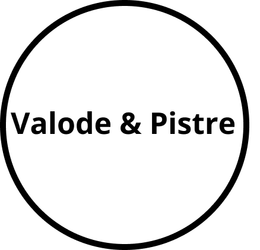

Nader Boutros
Nader Boutros
Directeur, PASS-TECH
Voir PlusNader Boutros est ingénieur architecte, enseignant à l'Ecole Nationale Supérieure d'Architecture de Paris Val de Seine et chercheur au laboratoire de recherche EVCAU depuis 25 ans. Il a contribué à la mise en place de l'enseignement du BIM dans diverses écoles d'ingénieurs et dans les écoles d'architecture ainsi que la mise en place de collaborations entre elles. Nader Boutros est également co-fondateur de la société PASS Technologie qui veille, conseille, développe et forme sur les outils BIM et les systèmes d'information en ligne. PASS Technologie accompagne les projets, les institutions, les entreprises ainsi que les fabricants dans leur adoption de processus BIM et la conception d'outils sur-mesure.
Voir Plus
Nader Boutros est ingénieur architecte, enseignant à l'Ecole Nationale Supérieure d'Architecture de Paris Val de Seine et chercheur au laboratoire de recherche EVCAU depuis 25 ans. Il a contribué à la mise en place de l'enseignement du BIM dans diverses écoles d'ingénieurs et dans les écoles d'architecture ainsi que la mise en place de collaborations entre elles. Nader Boutros est également co-fondateur de la société PASS Technologie qui veille, conseille, développe et forme sur les outils BIM et les systèmes d'information en ligne. PASS Technologie accompagne les projets, les institutions, les entreprises ainsi que les fabricants dans leur adoption de processus BIM et la conception d'outils sur-mesure.
 Aline Isoz
Aline Isoz
Experte suisse en transformation digitale
Voir PlusAline Isoz est une experte suisse en transformation digitale. Elle accompagne les entreprises dans la coordination et la gestion de projets stratégiques liés à la numérisation, depuis la mise en place de la gouvernance et des modèles d'affaires, jusqu'au développement des compétences et l'implémentation des systèmes d'information. Fondatrice et directrice de Blackswan pendant 10 ans, elle est désormais active au sein du groupe Mazars, une organisation internationale spécialisée dans les secteurs de l’audit, de la fiscalité, du conseil aux entreprises, ainsi que de l’accompagnement comptable et financier. Aline Isoz est également Vice-présidente du Conseil d'administration de Globaz SA, membre du Conseil de la Fondation suisse des paraplégiques, membre du Conseil d'administration des Services industriels genevois et de VO Energies.
Voir Plus
Aline Isoz est une experte suisse en transformation digitale.
Elle accompagne les entreprises dans la coordination et la gestion
de projets stratégiques liés à la numérisation, depuis la mise en place
de la gouvernance et des modèles d'affaires, jusqu'au développement des
compétences et l'implémentation des systèmes d'information. Fondatrice
et directrice de Blackswan pendant 10 ans, elle est désormais active au
sein du groupe Mazars, une organisation internationale spécialisée dans
les secteurs de l’audit, de la fiscalité, du conseil aux entreprises,
ainsi que de l’accompagnement comptable et financier.
Aline Isoz est également Vice-présidente du Conseil d'administration
de Globaz SA, membre du Conseil de la Fondation suisse des paraplégiques,
membre du Conseil d'administration des Services industriels genevois et de VO Energies.
 Daniel Hurtubise
Daniel Hurtubise
BIM manager du prestigieux cabinet d'architecte Renzo Piano Building Workshop
Voir PlusDaniel Hurtubise est BIM manager du prestigieux cabinet d'architecte Renzo Piano Building Workshop depuis plus de 10 ans. Il a œuvré à l'implémentation du BIM au sein de l'agence et sur de nombreux projets : Nouveau Palais de Justice de Paris, l’Université Columbia à New York, l’École normale supérieure de Cachan à Paris-Saclay… Daniel Hurtubise est également Cofondateur de la société Data-shapes qui collabore sur des projets en tant que gestionnaire BIM, formateurs et développeurs d'outils et workflows personnalisés.
Voir Plus
Daniel Hurtubise est BIM manager du prestigieux cabinet d'architecte Renzo Piano Building Workshop depuis plus de 10 ans. Il a œuvré à l'implémentation du BIM au sein de l'agence et sur de nombreux projets : Nouveau Palais de Justice de Paris, l’Université Columbia à New York, l’École normale supérieure de Cachan à Paris-Saclay… Daniel Hurtubise est également Cofondateur de la société Data-shapes qui collabore sur des projets en tant que gestionnaire BIM, formateurs et développeurs d'outils et workflows personnalisés.
 Sylvain RISS
Sylvain RISS
Directeur numérique et BIM chez BG Ingénieurs Conseils
Voir PlusSylvain RISS est directeur numérique et BIM pour le groupe BG Ingénieurs Conseils. Auparavent il travaillait au sein de l’entreprise Assystem. Dans ce cadre, il portait la direction du programme BIM pour la Société du Grand Paris. Il était missionné, à l’aide de son équipe, pour faciliter l’intégration du BIM au sein du projet du Grand Paris Express. Après avoir été directeur du mastère spécialisé en Management de Projet BIM à l’école d’ingénieurs du CESI (2011-2017), Sylvain RISS a précédemment travaillé pendant une dizaine d’années en maîtrise d’œuvre (conception et exécution) avant d’intégrer l’école d’ingénieurs du CESI pour développer les sujets d’ingénierie et management de projets. Docteur en sciences de l’éducation, il est spécialisé dans les questions d’ingénierie pédagogique et de formation également. Ses travaux portent actuellement sur la transformation digitale des entreprises sous ses diverses facettes (stratégie, processus et technologie), en particulier le BIM mais aussi l’accompagnement au changement dans les organisations ainsi que l’impact des sujets technologiques émergents actuels.
Voir Plus
Sylvain RISS est directeur numérique et BIM pour le groupe BG Ingénieurs Conseils. Auparavent il travaillait au sein de l’entreprise Assystem. Dans ce cadre, il portait la direction du programme BIM pour la Société du Grand Paris. Il était missionné, à l’aide de son équipe, pour faciliter l’intégration du BIM au sein du projet du Grand Paris Express. Après avoir été directeur du mastère spécialisé en Management de Projet BIM à l’école d’ingénieurs du CESI (2011-2017), Sylvain RISS a précédemment travaillé pendant une dizaine d’années en maîtrise d’œuvre (conception et exécution) avant d’intégrer l’école d’ingénieurs du CESI pour développer les sujets d’ingénierie et management de projets. Docteur en sciences de l’éducation, il est spécialisé dans les questions d’ingénierie pédagogique et de formation également. Ses travaux portent actuellement sur la transformation digitale des entreprises sous ses diverses facettes (stratégie, processus et technologie), en particulier le BIM mais aussi l’accompagnement au changement dans les organisations ainsi que l’impact des sujets technologiques émergents actuels.
 Une petite pause pour se rafraichir les neurones
Une petite pause pour se rafraichir les neuroneslorem upsum lorem upsumlorem upsumlorem upsumlorem upsum
 Laurent Niggeler
Laurent Niggeler
Directeur de l'information du territoire à la République et au Canton de Genève / Géomètre cantonal
Voir PlusLaurent Niggeler est directeur de l'information du territoire à la République et au Canton de Genève, il est également géomètre cantonal. Il dirige le service de la mensuration officielle, chargé de collecter et de mettre les données géo référencées du territoire à disposition des usagers. Laurent Niggeler est un expert et un pionnier en Suisse de l'application des technologies de la cartographie 3D et du BIM aux Systèmes d'Informations du Territoire.
Voir Plus
Laurent Niggeler est directeur de l'information du territoire à la République et au Canton de Genève, il est également géomètre cantonal. Il dirige le service de la mensuration officielle, chargé de collecter et de mettre les données géo référencées du territoire à disposition des usagers. Laurent Niggeler est un expert et un pionnier en Suisse de l'application des technologies de la cartographie 3D et du BIM aux Systèmes d'Informations du Territoire.
 Emmanuel François
Emmanuel François
Cofondateur et président de la Smart Building Alliance for Smart Cities (SBA)
Voir PlusEmmanuel François est le cofondateur et président de la Smart Building Alliance for Smart Cities (SBA). Avec plus de 400 membres, la SBA accompagne, dans une approche très transversale, l'ensemble des acteurs impliqués dans Smart Building et Smart City dans leur transformation numérique combinée à leur transition environnementale. Elle est à l'origine des standards R2S (Ready2Services), R2S-4 Grids et BIM-4Value, pré-requis pour le Smart Building et le Smart Grid. Emmanuel FRANCOIS est également responsable de l'Europe de l'Ouest pour EnOcean GmbH, qui est le pionnier des technologies sans fil et sans batterie pour l'IdO. A ce titre, il est également Vice-Président de l'Alliance EnOcean pour l'Europe, le Moyen-Orient et l'Afrique (plus de 400 membres dans le monde). Récemment, il a fondé la fondation MAJ, dont le but est d'ouvrir une nouvelle voie, un nouveau projet de société pour entrer dans la 3ème révolution industrielle et répondre aux défis de la planète actuelle : une autre voie pour un autre monde. Il a toujours été dans le monde électrotechnique à la direction générale ou à la direction commerciale successivement chez Wieland Electric France, Cooper Group, ABB et Schneider Electric.
Voir Plus
Emmanuel François est le cofondateur et président de la Smart Building Alliance for Smart Cities (SBA). Avec plus de 400 membres, la SBA accompagne, dans une approche très transversale, l'ensemble des acteurs impliqués dans Smart Building et Smart City dans leur transformation numérique combinée à leur transition environnementale. Elle est à l'origine des standards R2S (Ready2Services), R2S-4 Grids et BIM-4Value, pré-requis pour le Smart Building et le Smart Grid. Emmanuel FRANCOIS est également responsable de l'Europe de l'Ouest pour EnOcean GmbH, qui est le pionnier des technologies sans fil et sans batterie pour l'IdO. A ce titre, il est également Vice-Président de l'Alliance EnOcean pour l'Europe, le Moyen-Orient et l'Afrique (plus de 400 membres dans le monde). Récemment, il a fondé la fondation MAJ, dont le but est d'ouvrir une nouvelle voie, un nouveau projet de société pour entrer dans la 3ème révolution industrielle et répondre aux défis de la planète actuelle : une autre voie pour un autre monde. Il a toujours été dans le monde électrotechnique à la direction générale ou à la direction commerciale successivement chez Wieland Electric France, Cooper Group, ABB et Schneider Electric.
 Nicolas Régnier
Nicolas Régnier
Chargé de la commission BIM de la SBA / CEO de Data Soluce
Voir PlusNicolas Régnier est en charge de la commission BIM de la SBA, il est également le CEO de Data Soluce. C'est un véritable pionnier de l’exploitation des données structurées générées par les processus BIM permettant une exploitation optimale des assets. Il a développé la première plateforme Cloud qui permet aux maîtres d’ouvrage de centraliser et valoriser les données de leurs projets immobiliers sur l’ensemble du cycle de vie du bâtiment (programme, conception, exécution, maintenance).
Voir Plus
Nicolas Régnier est en charge de la commission BIM de la SBA, il est également le CEO de Data Soluce. C'est un véritable pionnier de l’exploitation des données structurées générées par les processus BIM permettant une exploitation optimale des assets. Il a développé la première plateforme Cloud qui permet aux maîtres d’ouvrage de centraliser et valoriser les données de leurs projets immobiliers sur l’ensemble du cycle de vie du bâtiment (programme, conception, exécution, maintenance).
PDG et fondateur de C-INNOV (Conseil Innovation Numérique)
Voir PlusAhmed Ryad SBARTAÏ est PDG et fondateur de C-INNOV (Conseil Innovation Numérique) une entreprise innovante, créative et qui prône le leadership. C-INNOV offre des services de consultations, de formations et d’accompagnement au Québec, au Canada et à travers le monde pour l’industrie de la construction (AEC), de l’immobilier, de la ville intelligente, de l’infrastructure et du développement durable. Ahmed Ryad SBARTAÏ est architecte, thermicien/énergéticien expert en efficacité énergétique et en rénovation, expert et leader en méthodologie et technologie BIM, CIM et VDC. Il possède plus de 25 années d’expérience en conception et gestion de projets aussi variés que prestigieux et une expertise en développement durable, en modélisation, en implantation Revit et en mise au point de la stratégie BIM dans des agences de renommée internationale.
Voir Plus
Ahmed Ryad SBARTAÏ est PDG et fondateur de C-INNOV (Conseil Innovation Numérique) une entreprise innovante, créative et qui prône le leadership. C-INNOV offre des services de consultations, de formations et d’accompagnement au Québec, au Canada et à travers le monde pour l’industrie de la construction (AEC), de l’immobilier, de la ville intelligente, de l’infrastructure et du développement durable. Ahmed Ryad SBARTAÏ est architecte, thermicien/énergéticien expert en efficacité énergétique et en rénovation, expert et leader en méthodologie et technologie BIM, CIM et VDC. Il possède plus de 25 années d’expérience en conception et gestion de projets aussi variés que prestigieux et une expertise en développement durable, en modélisation, en implantation Revit et en mise au point de la stratégie BIM dans des agences de renommée internationale.
lorem upsum lorem upsumlorem upsumlorem upsumlorem upsum
Conseil, ingénierie, Minergie, concepts de protection du climat et écologie dans la construction
Voir PlusLa haute technicité de la construction exige aujourd'hui non seulement des connaissances de pointe dans divers secteurs, mais aussi des compétences et un savoir-faire dans la manière de coordonner ces différents domaines afin d'en dégager des solutions optimales au niveau technique, mais aussi au niveau économique. Les maîtres d'œuvre et les investisseurs peuvent ainsi atteindre, sans coûts supplémentaires, des plus-values au niveau productivité, confort, fonctionnalité, sécurité et respect de l'environnement. Depuis 1999, Amstein + Walthert offre à ses clients des prestations de planificateurs et de conseillers pour l'ensemble des techniques du bâtiment.
Voir Plus
La haute technicité de la construction exige aujourd'hui non seulement des connaissances de pointe dans divers secteurs, mais aussi des compétences et un savoir-faire dans la manière de coordonner ces différents domaines afin d'en dégager des solutions optimales au niveau technique, mais aussi au niveau économique.
Les maîtres d'œuvre et les investisseurs peuvent ainsi atteindre, sans coûts supplémentaires, des plus-values au niveau productivité, confort, fonctionnalité, sécurité et respect de l'environnement.
Depuis 1999, Amstein + Walthert offre à ses clients des prestations de planificateurs et de conseillers pour l'ensemble des techniques du bâtiment.
Responsable BIM et SYNTHESE technique AW
 Romain DU SORDET
Romain DU SORDET
Directeur Grand Projet AW
 CADATWORK
CADATWORK
Conseil en gestion de process BIM
Voir PlusCAD@WORK est une société de conseils et de formations spécialisée dans la mise en oeuvre de procédés BIM à destination des professionnels de la construction et de la maîtrise d’ouvrage.
Voir Plus
CAD@WORK est une société de conseils et de formations spécialisée dans la mise en oeuvre de procédés BIM à destination des professionnels de la construction et de la maîtrise d’ouvrage.
 Vincent Bleyenheuft
Vincent Bleyenheuft
Architect, partner CADatWork, BIM consultant, author of "Les familles de Revit pour le BIM", Autodesk Expert Elite
Voir PlusVincent Bleyenheuft dirige un cabinet d'architecte pluridisciplinaire (architecture et ingénierie technique) en France qui travaille principalement sur des projets de logements collectifs. Il est également un des associés de CADatWork, société spécialisée dans le conseil autour des processus BIM et au sein de laquelle il est responsable du pôle BIM Management. Expert BIM et Revit reconnu en France et à international, il a développé depuis toujours un intérêt particulier pour les objets qui l'a amené en 2017 à publier le livre "Les familles de Revit pour le BIM", édité par Eyrolles et qui fait référence en matière d'ouvrage sur le sujet, en France.
Voir Plus
Vincent Bleyenheuft dirige un cabinet d'architecte pluridisciplinaire
(architecture et ingénierie technique) en France qui travaille principalement sur
des projets de logements collectifs. Il est également un des associés de
CADatWork, société spécialisée dans le conseil autour des processus BIM et
au sein de laquelle il est responsable du pôle BIM Management.
Expert BIM et Revit reconnu en France et à international, il a développé depuis
toujours un intérêt particulier pour les objets qui l'a amené en 2017 à publier le
livre "Les familles de Revit pour le BIM", édité par Eyrolles et qui fait référence
en matière d'ouvrage sur le sujet, en France.
Une petite pause pour se rafraichir les neurones

Architecture et planification
Voir PlusValode & Pistre (Valode et Pistre) est un cabinet d'architecture français exploité par Denis Valode et Jean Pistre. Son siège social est situé dans le 7e arrondissement de Paris.
Voir Plus
Valode & Pistre (Valode et Pistre) est un cabinet d'architecture français exploité par Denis Valode et Jean Pistre. Son siège social est situé dans le 7e arrondissement de Paris.
 Annalisa De Maestri
Annalisa De Maestri
Dirigeante de l'entreprise VPBIM
Voir PlusIngénieurs BTP inscrite à l'ordre des ingénieurs de Milan et Architecte, Annalisa DE MAESTRI débute sa carrière auprès de Philippe Starck qui travaille alors dans la réalisation d’hôtels de luxe. Entre 2009 et 2018, au sein du BET Bianchi et MBA-ingénierie, elle a dirigé l'équipe de synthèse et BIM de la Fondation Louis Vuitton. Elle a par la suite pris la direction des sociétés et leur développement en France et à l’international, puis, elle a occupé le poste de Président. Aujourd’hui à la direction de la société VPBIM, du groupe Valode et Pistre, elle développe l’activité autour du BIM, du Data Management, de la synthèse et s’occupe également des sujets de R&D. Enseignant en BIM management et management du changement depuis plus de 10 ans pour des institutions publiques et privés tels que l’ « Università degli Studi di Pavia » le Moniteur Formations, l'école des Mines d'Alès, Art et métiers, ou encore le MS BIM de l'EPNC, elle a également publié un livre technique « Premiers pas en BIM » aux éditions Eyrolles.
Voir Plus
Ingénieurs BTP inscrite à l'ordre des ingénieurs de Milan et Architecte, Annalisa DE MAESTRI débute sa carrière auprès de Philippe Starck qui travaille alors dans la réalisation d’hôtels de luxe. Entre 2009 et 2018, au sein du BET Bianchi et MBA-ingénierie, elle a dirigé l'équipe de synthèse et BIM de la Fondation Louis Vuitton. Elle a par la suite pris la direction des sociétés et leur développement en France et à l’international, puis, elle a occupé le poste de Président. Aujourd’hui à la direction de la société VPBIM, du groupe Valode et Pistre, elle développe l’activité autour du BIM, du Data Management, de la synthèse et s’occupe également des sujets de R&D. Enseignant en BIM management et management du changement depuis plus de 10 ans pour des institutions publiques et privés tels que l’ « Università degli Studi di Pavia » le Moniteur Formations, l'école des Mines d'Alès, Art et métiers, ou encore le MS BIM de l'EPNC, elle a également publié un livre technique « Premiers pas en BIM » aux éditions Eyrolles.
 VCS SA
VCS SA
VCS, entreprise générale et totale basée en Suisse Romande
Voir PlusVCS est un acteur reconnu de la construction en Suisse romande. Fort d’une solide expérience en entreprise générale et totale, VCS propose à ses clients publics et privés une offre globale et un accompagnement sur mesure pour réaliser tout projet de construction. Au sein de VINCI Construction, VCS s’appuie sur les savoir-faire spécialisés de ses équipes conjugués à une culture de l’excellence technique et opérationnelle pour donner vie aux projets de ses clients en leur garantissant un haut niveau d’exigence et de qualité. Au service des territoires, l’entreprise noue des relations durables avec ses partenaires en tenant compte des enjeux économiques, sociaux et environnementaux.
Voir Plus
VCS est un acteur reconnu de la construction en Suisse romande.
Fort d’une solide expérience en entreprise générale et totale, VCS propose à ses clients publics et privés une offre globale et un accompagnement sur mesure pour réaliser tout projet de construction.
Au sein de VINCI Construction, VCS s’appuie sur les savoir-faire spécialisés de ses équipes conjugués à une culture de l’excellence technique et opérationnelle pour donner vie aux projets de ses clients en leur garantissant un haut niveau d’exigence et de qualité. Au service des territoires, l’entreprise noue des relations durables avec ses partenaires en tenant compte des enjeux économiques, sociaux et environnementaux.

 Loïc Sauvage
Loïc Sauvage
Ingénieur BIM Travaux chez VCS-SA
Voir PlusLoïc Sauvage est chargé de la fiabilisation de maquette numérique, mise en place de technologie BIM 2 Site et réalité augmentée. Il est aussi chargé du développement du suivi de travaux en BIM.
Voir Plus
Loïc Sauvage est chargé de la fiabilisation de maquette numérique, mise en place de technologie BIM 2 Site et réalité augmentée. Il est aussi chargé du développement du suivi de travaux en BIM.